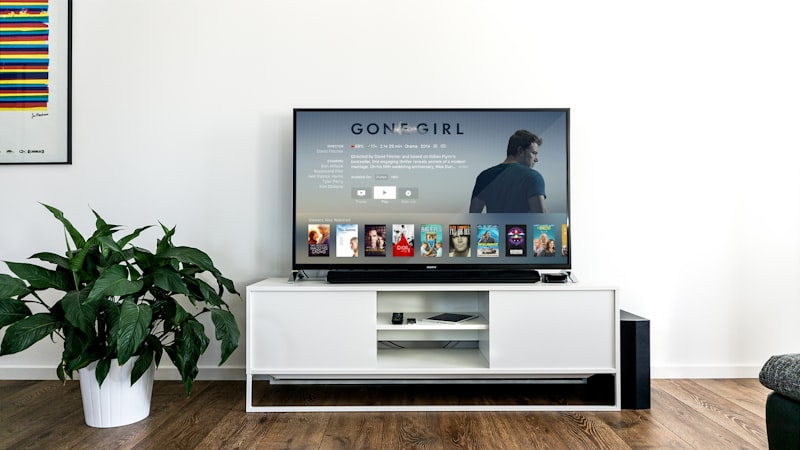

Streaming device specs are designed to confuse you. Manufacturers throw around terms like HDR10+, Dolby Atmos, WiFi 6E, and "AI-enhanced upscaling" because they know most people don't know what any of it means — and confused people tend to buy the more expensive option "just in case."
Let's fix that. Here's what every spec actually means, whether you need it, and how to avoid overpaying for features that won't make a difference on your setup.

Resolution: 4K vs 1080p
What it means: 4K (also called Ultra HD or 2160p) has four times the pixels of 1080p (Full HD). More pixels = sharper, more detailed picture.
Do you need it? It depends on your TV.
- If you have a 4K TV (most TVs sold since 2018 are 4K): Yes, get a 4K streaming device.
- If you have a 1080p TV: No. A 4K streaming device will just output 1080p anyway. Save your money and get the Fire TV Stick Lite.
- If you're not sure: Check your TV's settings or Google the model number. If you bought it in the last 5-6 years, it's almost certainly 4K.
HDR: Dolby Vision vs HDR10+ vs HDR10
What it means: HDR (High Dynamic Range) makes bright parts brighter and dark parts darker, with more colors in between. It's a bigger visual improvement than the jump from 1080p to 4K, honestly.
- HDR10: The baseline. Every 4K streaming device and most 4K TVs support it.
- Dolby Vision: The premium format. Dynamic metadata adjusts the picture scene by scene. Netflix, Disney+, and Apple TV+ use it heavily.
- HDR10+: Samsung's answer to Dolby Vision. Similar dynamic metadata, but less widely supported. Amazon Prime Video uses it.
Do you need it? If your TV supports Dolby Vision, get a streaming device that supports it. The difference is visible and worth it.
Audio: Dolby Atmos
Do you need it? Only if you have a Dolby Atmos soundbar or surround sound system. If you're using your TV's built-in speakers, Atmos support on your streaming device is meaningless.
WiFi: WiFi 6E vs WiFi 6 vs WiFi 5
- WiFi 5 (802.11ac): The previous standard. Perfectly fine for streaming, even 4K.
- WiFi 6 (802.11ax): Faster, better at handling multiple devices, improved range.
- WiFi 6E: Same as WiFi 6 but adds a 6 GHz band — less congestion, faster speeds.
Do you need it? WiFi 5 is sufficient for 4K streaming. Don't choose a streaming device based on WiFi spec alone. The one exception: if your device is far from your router and you get buffering, a newer WiFi standard can help.
Voice Control
- Alexa (Fire TV): Best smart home integration, good content search
- Google Assistant (Chromecast): Best natural language understanding
- Siri (Apple TV): Best for Apple ecosystem
- Roku Voice: Basic content search only
Voice search is genuinely useful. Pick the assistant that matches your existing ecosystem.
Storage
Most streaming sticks have 8GB. For most people, 8GB is fine. Streaming apps are small, and you're streaming content, not storing it locally.
Ethernet
If your WiFi is reliable, you don't need it. But if you experience buffering with 4K content, a wired Ethernet connection is the most reliable fix.
The Decision Flowchart
- What's your budget?
- Under $35 → Fire TV Stick Lite
- $35-60 → Fire TV Stick 4K Max or Roku Streaming Stick 4K+
- $100+ → Apple TV 4K or Fire TV Cube
- What ecosystem are you in?
- Amazon/Alexa → Fire TV Stick
- Apple/iPhone → Apple TV
- Google/Android → Chromecast with Google TV
- None/neutral → Roku or Fire TV Stick
- Is your TV 4K?
- Yes → Get a 4K streaming device
- No → Save money, get the Lite
🏆 The Bottom Line
Don't overthink it. For most people, the Fire TV Stick 4K Max at ~$55 checks every box that matters: 4K, Dolby Vision, Dolby Atmos, fast WiFi, and good voice control. Unless you have a specific reason to go with another platform, it's the safest bet. Check out our full 2026 rankings for the complete picture.
Check Price on Amazon →